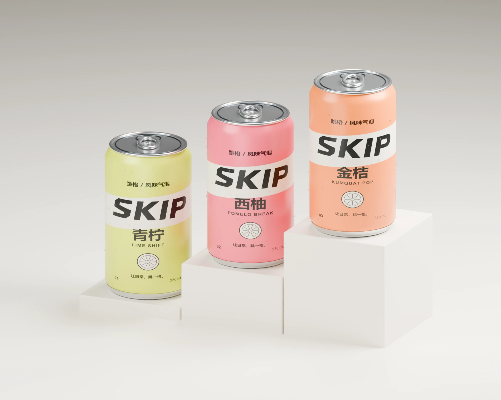
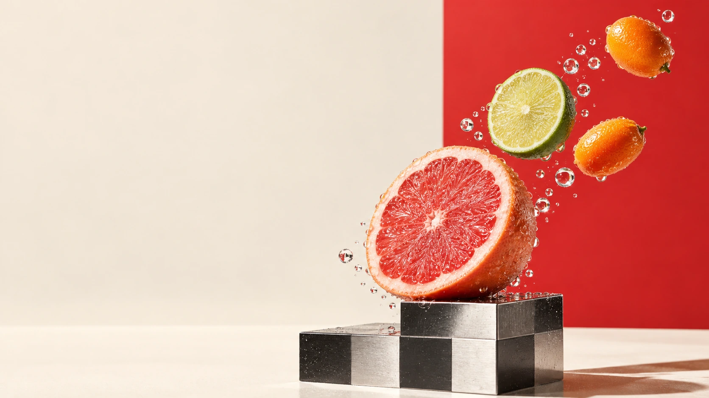
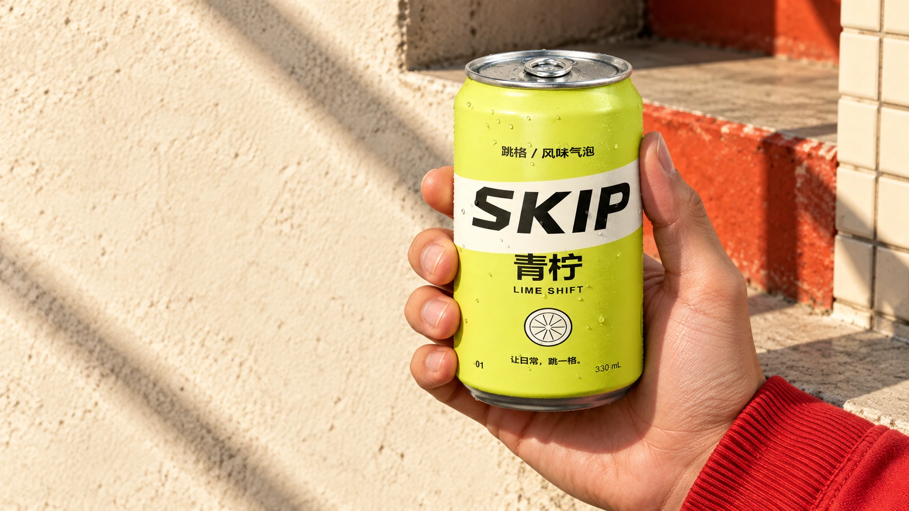
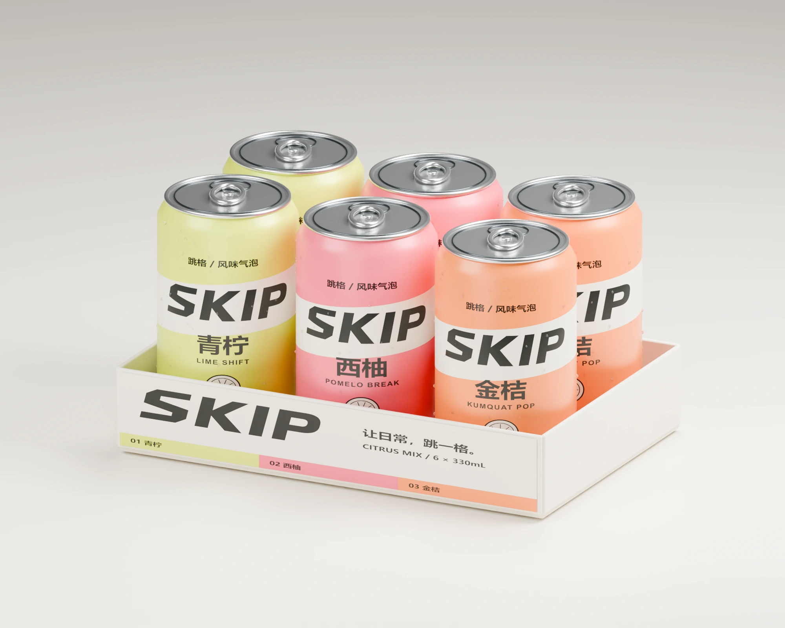
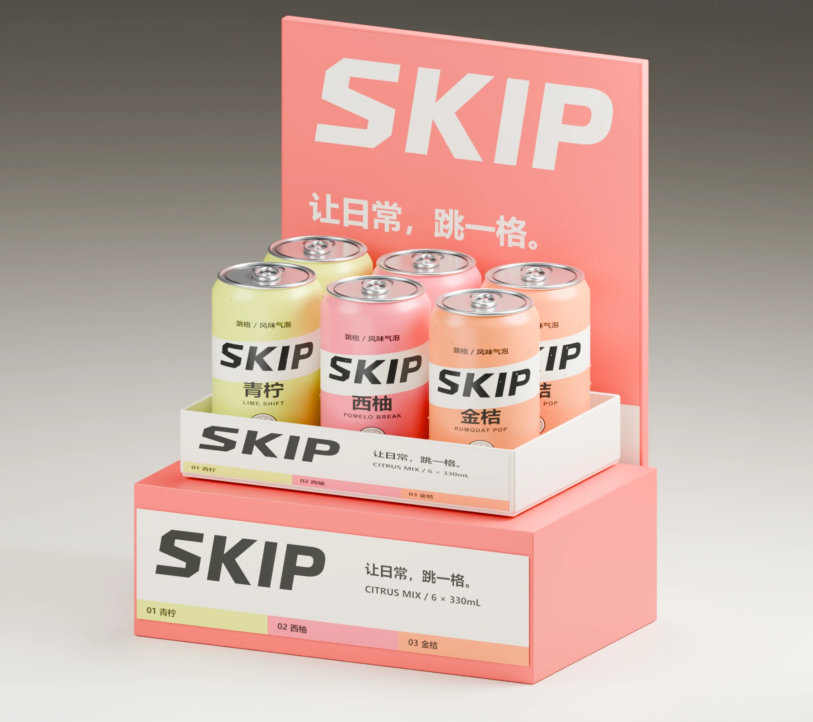
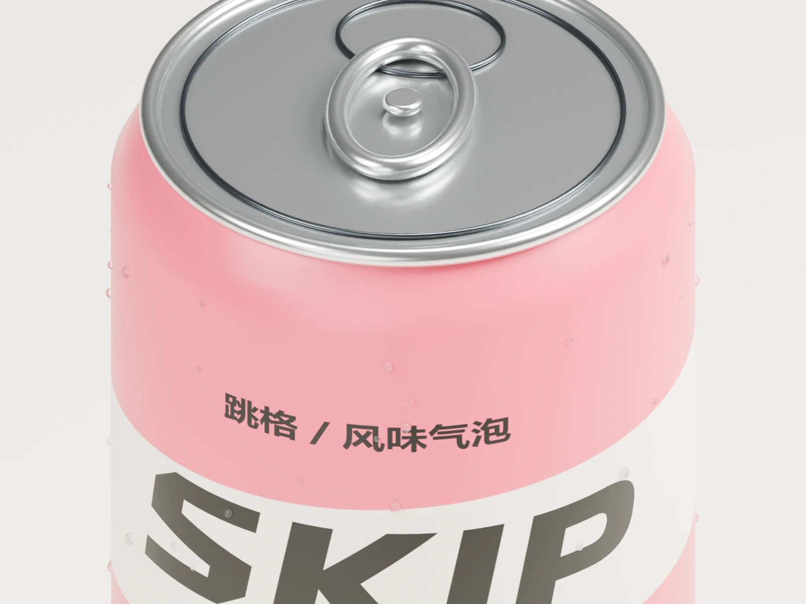

01 青柠 / 02 西柚 / 03 金桔DESIGN CASE / PDF
完整设计案例 18 页
品牌策略 · 包装与产品三维 · 新品上市传播
01 / PICK YOUR NEW FRAME
三种风味。
别只选一种。
先选颜色，再转一转。
看看这一罐，有什么不一样。
SKIP / THE CITRUS COLLECTION
01 / LIME SHIFT
把平淡，切开。
青柠的清亮联想，以高明度黄绿与干净的斜切图形表达。
概念产品展示，不涉及真实购买。
02 / MIX YOUR OWN SIX
这一盒，
由你来排。
同一种节奏，可以重复。
也可以，六格都不同。
YOUR SIX. YOUR WAY.
选满六罐，生成一张自己的配色卡。

A BRIGHTER KIND OF EVERYDAY.
把“照常”，
换成“试试”。
一个风味，一次小小的换挡。
为日常增加一点鲜明的想象。
03 / EVERY FRAME IS A NEW FRAME
同一个 SKIP。
三种跳格方式。
固定包装，切换情境。
从信息流到竖屏，识别始终在线。

TAKE A DIFFERENT STEP.
下一步，
不必照旧。
通勤路上。台阶边。
你决定今天的下一格。
04 / FROM SHELF TO SIX-PACK
好看，要能连成一套。
单罐、组合装、门店展示。
同一份字标，同一套包装主稿。



CONSISTENCY IS DESIGNED.
每个镜头，
都认得出这一罐。
从可编辑包装到同一个三维模型，字标、标签位置和罐体比例得到固定。变化留给镜头与环境。
包装与空间为概念设计，尚未实体打样。05 / SKIP IN MOTION
让跳格，真的动起来。
三维产品动画 × 动态排版
原创节奏与声音设计
跳格 SKIP 是一个全新自主品牌命题，以三口味包装与新品上市传播为核心，打通视觉识别、固定产品、渠道物料与交互展示。
字标和包装由矢量主稿控制，产品以同一套三维模型渲染并导出可旋转文件。果物与生活场景使用内置 imagegen 辅助制作；片中产品动作由三维源文件渲染。
虚构品牌 / AI 协作创作。口味、受众与场景为设计假设。未进行配方研发、营养检测、实体打样或真实投放，本页不提供购买。